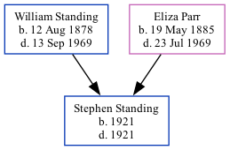

Stephen Earling Standing 1921 - 1921 [ Home ] | [ Calendar ] | [ Surnames Index ] | [ Family History ]The child of William Standing (a laundryman) and Eliza Parr Stephen Standing , the fourth cousin once-removed on the father's side of Nigel Horne , was born in Romford, Essex, England in 19211,2 .
He died on the same day2 (jul/Aug/Sep).
Parents William Ernest was born on Aug 12, 1878Eliza Mary was born on May 19, 1885Citations England & Wales, Birth Index: 1916-2005 Online publication - Provo, UT, USA: The Generations Network, Inc., 2008.Original data - General Register Office. England and Wales Civil Registration Indexes. London, England: General Register Office. © Crown copyright. Published by permission of the Cont England & Wales, Death Index: 1984-2005 Online publication - Provo, UT, USA: The Generations Network, Inc., 2007.Original data - General Register Office. England and Wales Civil Registration Indexes. London, England: General Register Office. © Crown copyright. Published by permission of the Cont Family Tree Map
Generated by ged2site . Last updated on Feb 28, 2025